{kind=link}
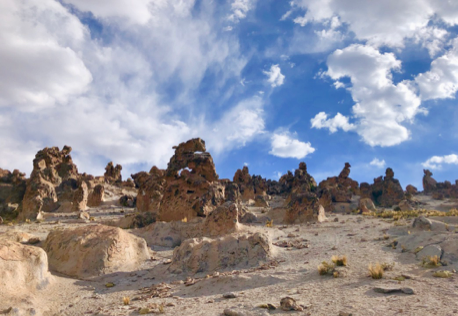
Peru
Stone Forest of Arequipa (2019)

I am an Assistant Professor in the Department of Earth and Atmospheric Sciences at the City College of New York. As a structural and tectonic seismologist, I use seismic observations from earthquakes and ambient seismic noise to better understand Earth system processes across spatial scales.
My work focuses on active plate boundaries, where I study how crust and mantle structures evolve through tectonic processes and how these structures influence deformation across scales. I am also interested in environmental and ambient-noise seismology, with a focus on how interactions between the atmosphere, oceans, and solid Earth generate seismic signals that can be used to probe subsurface structure. Current research themes in my group include mantle dynamics, seismic anisotropy, and the coupling between tectonic and surface processes.
I am currently looking for motivated students to join my research group. Please reach out to share your interests and to find out more about research opportunities and life at CCNY.
Science is an active process and I enjoy engaging in all aspects of research—from data collection in the field to science communication and outreach beyond the classroom.

My group develops and applies seismological methods to understand how tectonic and surface processes shape the structure of the Earth from the crust to the upper mantle.
 Subduction zones are critical to understanding Earth processes. Subducting plates act as the primary driver for plate tectonic motion, serve as the link for material recycling between the surface and the deep interior, and host many natural hazards. Well-studied boundaries define classical subduction models, yet significant variance in these properties is observed—even across a single system. To analyze the full breadth of earth processes and hazards along subduction zones, we must robustly analyze the outliers. My research thus far has targeted two endmember subduction zones: the Indo-Burman and the northern Andes.
Subduction zones are critical to understanding Earth processes. Subducting plates act as the primary driver for plate tectonic motion, serve as the link for material recycling between the surface and the deep interior, and host many natural hazards. Well-studied boundaries define classical subduction models, yet significant variance in these properties is observed—even across a single system. To analyze the full breadth of earth processes and hazards along subduction zones, we must robustly analyze the outliers. My research thus far has targeted two endmember subduction zones: the Indo-Burman and the northern Andes.
A seismogram's frequency content reveals myriad contributions to Earth's background seismic energy beyond earthquakes. How can these contributing sources be characterized and utilized? One such breakthrough involves ocean microseisms—pulses of seismic energy sources from ocean waves and detected across the globe. Microseisms were long considered noise and disregarded by the solid Earth community, though recent improvements in observational capabilities both onshore and offshore have generated a resurged interest in the microseismic band for imaging subsurface structure, studying oceanographic and meteorological phenomena, and examining the details of fluid-solid interactions. By unraveling background seismic energy, we unlock the untapped potential of terabytes of archived seismic recordings for exploring linkages between environmental processes and the solid Earth.
I am currently looking for motivated students to join our research group.
Please reach out to share your interests and to find out more about research opportunities and life at CCNY.
Science communication continues to be an essential element of my work, both within the classroom and beyond. During my graduate studies at the Lamont-Doherty Earth Observatory, I contribute to a wide range of events and programs, including the Seismic Sound Lab, Girls' Science Day, and Open House. During the pandemic of 2020, I also began visiting elementary and middle-school classrooms virtually to engage budding earth scientists and introduce them to the Earth's interior. While in DC, I organized and performed in interactive panels at the annual AwesomeCon pop-culture convention to bring cutting-edge science to new audiences in creative formats.
At Columbia University, I engaged with the Center of Teaching and Learning's Teaching Development Program to hone my abilities and consciously incorporate active objective-focused learning into my lessons. This training aided in my years as a lead teaching assistant for a lab-oriented introductory course on geological structures and processes. Further efforts in weekly discussion groups during my postdoc at Carnegie Science prepared me to serve as an inclusive mentor to the next generation of scientists from many backgrounds.

C.J.W. Carchedi, L. Wagner, G. Monsalve, D.S. Avellaneda-Jiménez, S. Golden. Complex shear‐wave splitting behavior in the northern Andes and possible implications for mantle flow around the Caldas Tear. Journal of Geophysical Research, 2026.
J.B. Russell, C.J.W. Carchedi. Estimating ice cover on the Great Lakes using seismic ambient noise. Geophysical Research Letters, 2026.
C.J.W. Carchedi, J.B. Gaherty, J.S. Byrnes, S. Rondenay, M.S. Steckler, R. Ajala, P. Persaud, E.A. Sandvol, M.S. Alim, S. Singha, S.H. Akhter. Evolving sediment structure and lithospheric architecture across the Indo‐Burman forearc margin from the joint inversion of surface‐ and scattered‐wave seismic constraints. Journal of Geophysical Research, 2025.
C.J.W. Carchedi, J.B. Gaherty, S.C. Webb, D.J. Shillington. Investigating short‐period lake‐generated microseisms using a broadband array of onshore and lake‐bottom seismometers. Seismological Research Letters, 2022.
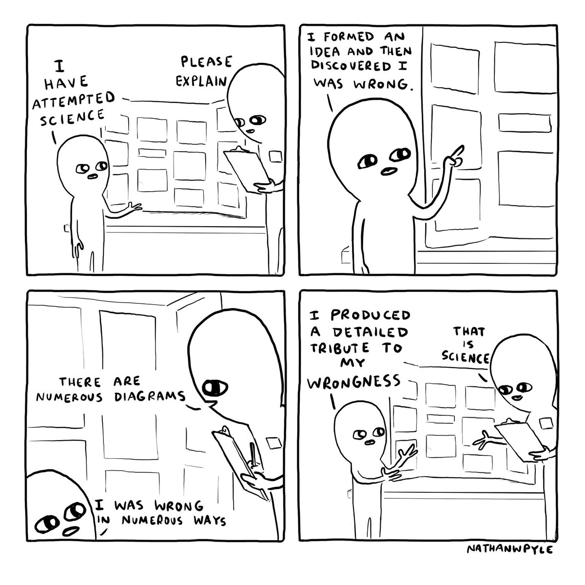
GeoMapApp: Application for Visualizing Geoscience Data Sets (LDEO)
Global Centroid-Moment-Tensor Project: Earthquake Source Catalog (LDEO)
Earthscope Consortium Homepage - Data, Instrumentation, Opportunities (NSF-NGF)
SAGE: Summer of Applied Geophysical Experience - Field Training Opportunities
xkcd: webcomic of romance, sarcasm, math, and language
Favorites: 913, 1194, 2058, 2501, 3008, 3021, 3165, 3221
Some snapshots from adventures beyond the office.

Stone Forest of Arequipa (2019)
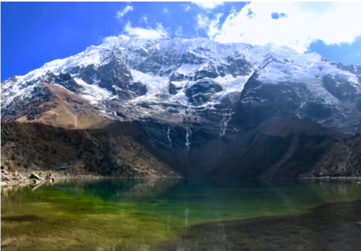
Humantay Glacial Lake of Cuzco (2019)
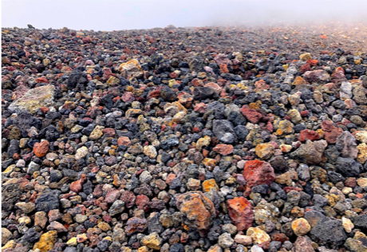
2003 Crater of Mount Etna. (2018)
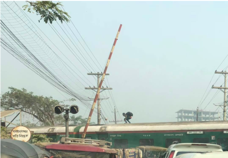
Alternate seating for railway. (2018)
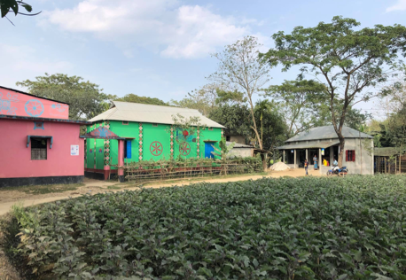
A village stroll. (2018)
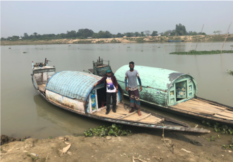
Hitching a ride downriver. (2019)
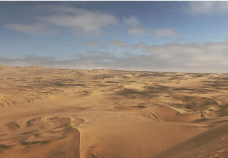
Dunes on the way to Nazca. (2019)
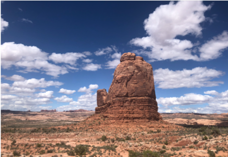
Arches National Park. (2019)
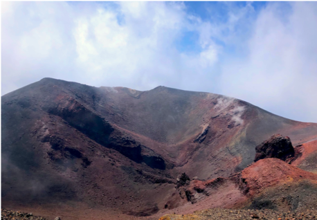
2003 Crater of Mount Etna. (2018)
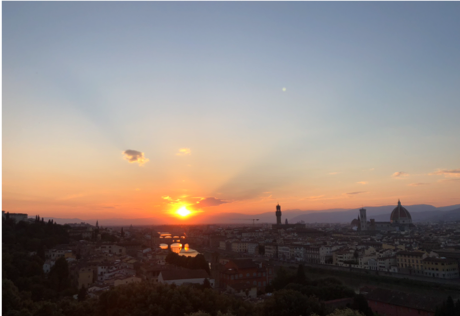
Sunset along the Arno, Florence. (2018)
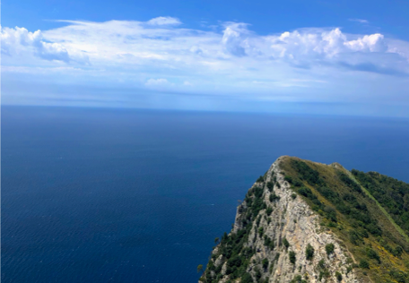
Capping the Isle of Capri. (2018)
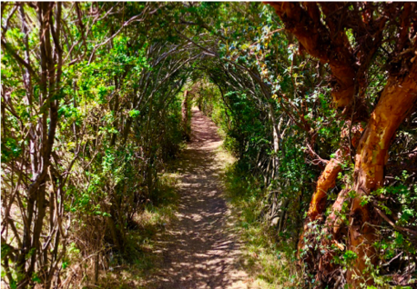
Raqchi Archeological Park, Cuzco. (2019)
{kind=link}
{kind=link}
{kind=link}
{kind=link}
{kind=link}
{kind=link}
{kind=link}
{kind=link}
{kind=link}
{kind=link}
{kind=link}